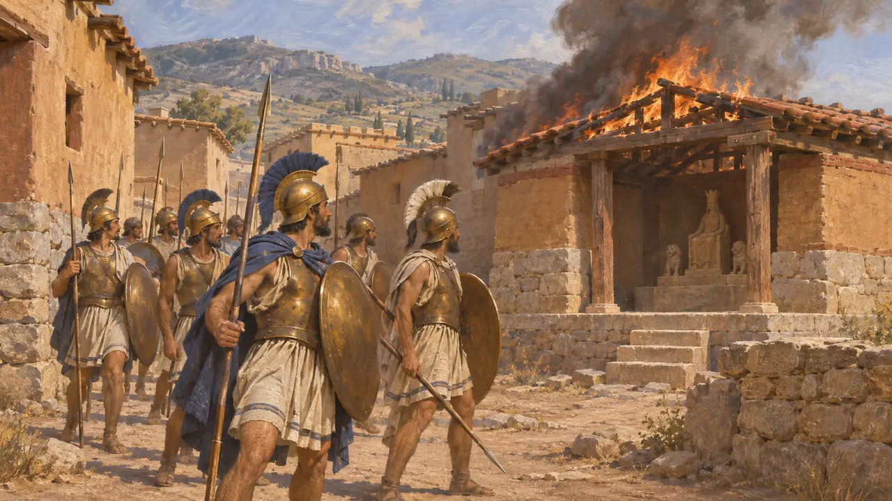
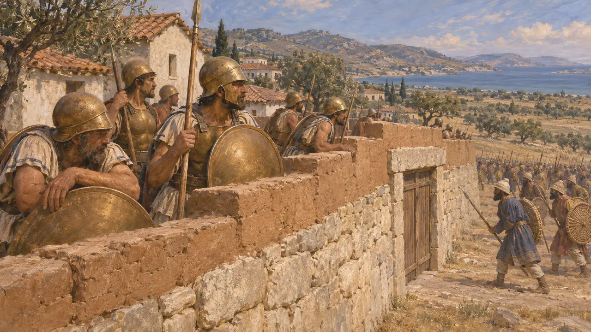
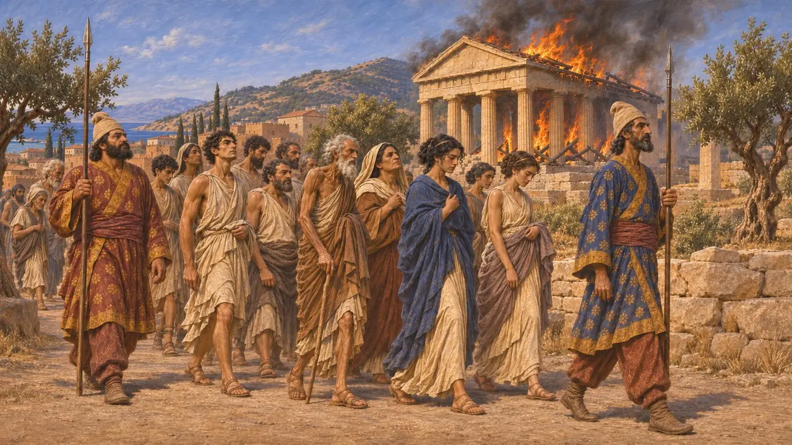
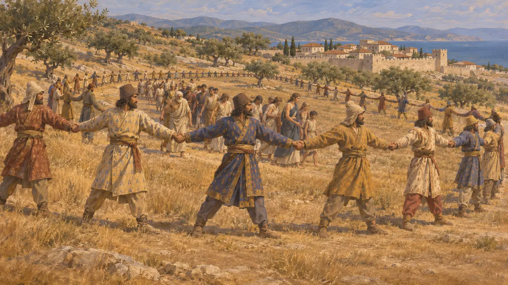
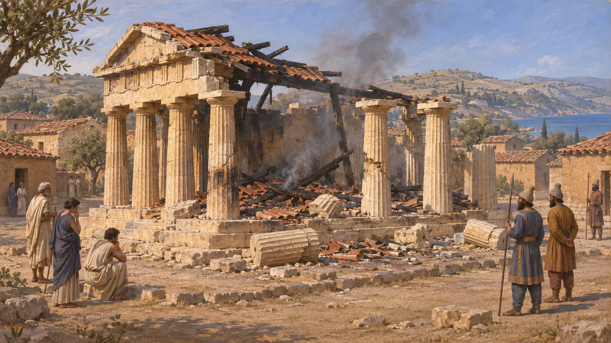

Энциклопедия › Битвы и события

Падение Эретрии
Осада и взятие персами евбейского города Эретрии, 490 год до н. э.
В игре: Уровень 8: Марафонская бухта
В 490 году до н. э. флот Датиса и Артаферна осадил Эретрию на Эвбее, один из двух греческих городов, помогавших ионийцам жечь Сарды. После шести дней боёв двое знатных граждан предали город на седьмой день. Геродот сообщает, что персы сожгли его святилища и увели жителей в Сузы, а затем переправились к Марафону, где экспедиция потерпела поражение.
В игре: Игра следует Геродоту: шесть дней обороны, предательство на седьмой, храмы сожжены в отместку за Сарды. Это лишь греческий рассказ; ни один известный персидский документ об осаде не упоминает.

Почему Эретрия стала целью
Античное свидетельствоГеродот сообщает, что Эретрия отправила пять триер на помощь Ионийскому восстанию в 498 году до н. э., отплатив Милету за старый долг. Её воины вместе с афинянами двинулись вглубь страны и участвовали в сожжении Сард, где был уничтожен храм богини Кибебы. Он пишет, что позднее Дарий велел Датису и Артаферну обратить в рабство Афины и Эретрию и привести пленников к нему.
Herodotus 5.99-102; 6.94

Шесть дней на стенах
Античное свидетельствоГеродот рассказывает, что Афины отправили на помощь 4000 поселенцев, которых они держали в Халкиде. Однако эретрийцы были расколоты, и по совету Эсхина, сына Нофона, афиняне отступили к Оропосу. Персы высадились близ Тамин, Херей и Эгилии. Эретрийцы предпочли обороняться за стенами, а не сражаться в открытом поле, и на седьмой день Евфорб и Филагр предали город персам.
Herodotus 6.100-101

Святилища сожжены, люди угнаны
Античное свидетельствоПо словам Геродота, персы разграбили и сожгли святилища в отместку за сожжённые в Сардах, а жителей обратили в рабство, как приказал Дарий. Он добавляет, что пленников привели в Сузы и что Дарий не причинил им вреда. Он поселил их в Ардерикке в киссийской земле, примерно в 40 стадиях от колодца, из которого добывали битум, соль и масло. Геродот говорит, что в его время они всё ещё говорили на своём языке.
Herodotus 6.101; 6.119

Живая сеть
Позднейшая легендаПлатон, писавший более века спустя, рассказывает, что воины Датиса, взявшись за руки, прошли по землям Эретрии, как сетью, так что никто не ускользнул. Этот образ встречается в двух его диалогах и подходит к его теме персидского могущества. Геродот рассказывает о таком же способе «прочёсывания» при взятии персами Хиоса, Лесбоса и Тенедоса после Лады. По этой причине некоторые историки видят в этом бродячий сюжет, а не свидетельство об Эретрии.
Plato, Laws 698d; Plato, Menexenus 240b; Herodotus 6.31

О чём говорит земля
СпорныйСтрабон пишет, что персы сровняли с землёй Старую Эретрию, а нынешний город был основан позже. Швейцарские раскопки показывают, что классический город стоял на месте архаического, а разрушение архаического храма Аполлона Дафнефора нередко датируют 490 г. до н. э. Некоторые учёные полагают, что «старая Эретрия» Страбона была более ранним поселением. Насколько полным было выселение, остаётся предметом спора, ведь в 480 г. до н. э. Эретрия отправила корабли к Артемисию и Саламину.
Strabo, Geography 10.1.10; Herodotus 8.1; 8.46; P. Ducrey et al., Eretria: A Guide to the Ancient City, 2004
Источники
- Herodotus, Histories 5.99-102; 6.94-119
- Plato, Laws; Menexenus
- Strabo, Geography 10.1.10
- P. Ducrey et al., Eretria: A Guide to the Ancient City, 2004
- J. F. Lazenby, The Defence of Greece 490-479 BC, 1993
- P. Briant, From Cyrus to Alexander, 2002